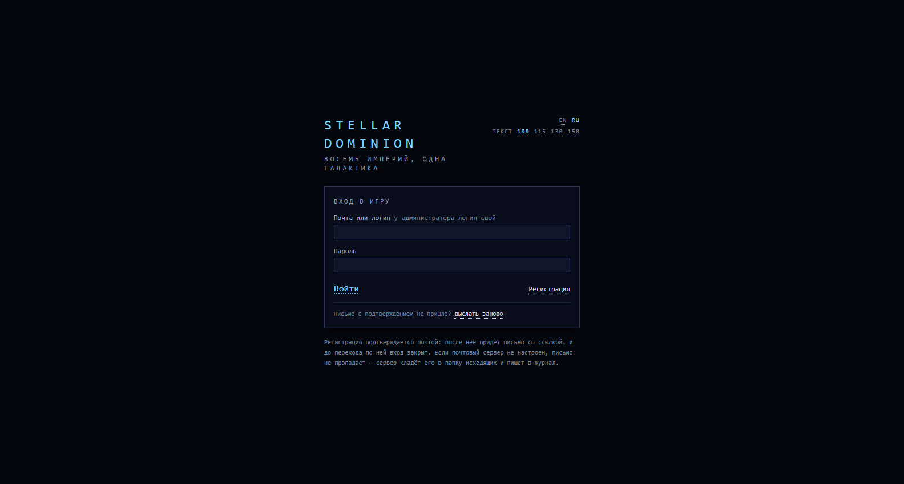
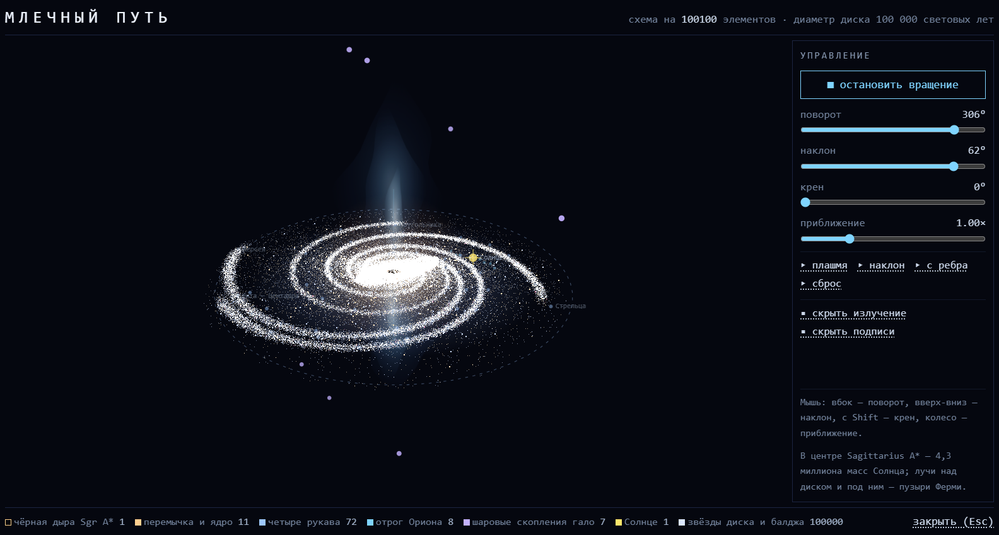
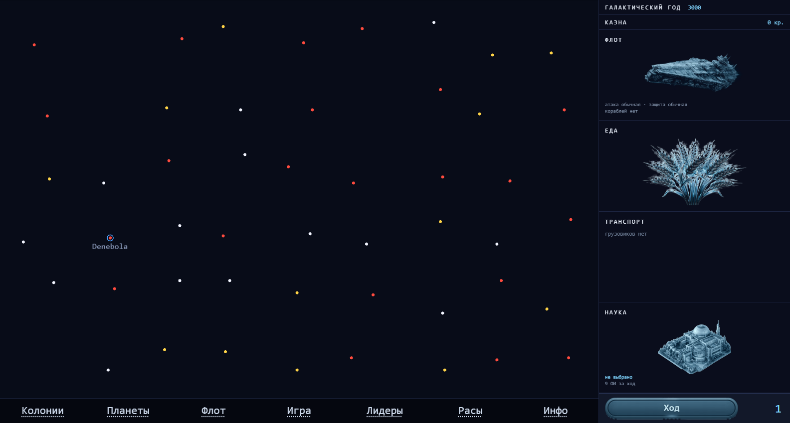
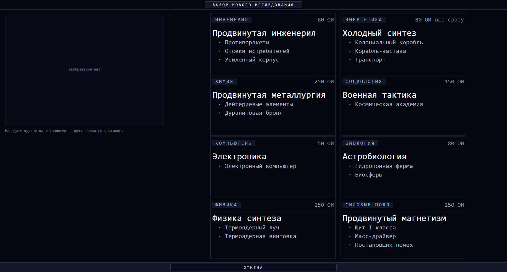

Раздел 1
Компоненты системы и их связи
Ядро простое: клиент говорит с сервером по REST и слушает события партии, сервер держит партии в PostgreSQL, а правила игры читает из JSON-справочников на диске. Всё остальное на схеме — мастерская: инструменты, которые ту же игру меряют, расшатывают и учат.
Данные, а не код
Новое здание, технология, пушка, корпус или лидер — запись в JSON, а не ветка в сервисе. В базе от них остаются только коды.
Один расчёт — одно место
Все числовые правила MoO2 живут в PopulationCalculator, боя — в
BattleRules, полёта — в FlightRules. Величина, посчитанная
дважды, однажды разойдётся.
Ход считается один раз
Галактика вычитывается раз на ход и передаётся фазам контекстом. Выборка «на игрока» внутри хода бьёт по всему ходу.
Раздел 1 · продолжение
Как приборы балансировки работают вместе
Задача у них одна: назначить честную цену каждой стороне расы — их полсотни, и игрок собирает из них свою расу на заданный бюджет. Цена не назначается на глаз: её меряют, и меряют в четыре этапа, где каждый следующий проверяет предыдущий.
Почему оценщику нужен взломщик
Пульт назначает цены по случайным сборкам, а живой игрок случайной не играет: он ищет сильнейшую. Комбинацию, которая бьёт всё остальное, случайными сборками не поймать — она встречается раз на тысячу. Оракул ищет её нарочно и отвечает на два вопроса плана: нет ли доминирующей сборки и какие стороны не вошли в верхушку.
Семь мерил силы
Выработка и наука с весом 1; деньги, военная сила, наземный бой, широта науки и разведка — с весом ½. Одного мерила мало: жителя в MOO II ставят либо к станку, либо в лабораторию, и без мерила науки «плохие учёные» за −3 очка выходили выгодной покупкой (+1,19), а с ним встали на место (−3,43).
Вес берётся регрессией
Стороны покупают не поодиночке, и сильная тянула бы за собой всё, что обычно стоит рядом. Доля приводится к нулю внутри партии, стартовый угол идёт столбцами.
У связки своя цена
Цены сторон складываются, а сила иных пар умножается. Поэтому у пары есть надбавка — и она тоже измеряется, а не назначается.
Пусто ≠ ноль
Мерило, не сработавшее в партии ни разу, отдаёт пусто. Ноль у всех — это «мерить нечем», а не «все одинаково слабы».
Раздел 1 · продолжение
Нейросеть: устройство и обучение
Сеть учится играть в нашу игру, а не в оригинал, и причина простая: партия у нас считается по REST за секунды, а в DOSBox — это полчаса настоящей мыши. Тысячи партий там не сыграть ни за какое время.
Каждая голова заведена не для полноты, а после замера, показавшего, что без неё учиться нечему. Сеть, умевшая только строить, за шестьдесят ходов не вышла из родной системы ни разу — колония одна, флотов ноль; сеть, не трогавшая жителей, играла тем распределением, какое колония получила при основании.
Раздел 2
Способ разработки: снятие сцен с оригинала
Половина окон MOO II нигде не выложена, а по памяти разметку не восстановить. Поэтому разметка наших экранов сверяется со снимками настоящей игры, снятыми в DOSBox. Инструменты для этого выросли в отдельную подсистему.
Почему записывать человека оказалось дешевле, чем догадываться
Инструмент не умел переставлять жителей с работы на работу — и не умел никогда. Это чинилось четырьмя заходами подряд, и каждый стоил партии: перетаскивание фигурки, нажатие по фигурке, нажатие по свободному месту, перебор всего ряда. Наблюдения противоречили друг другу. Хозяин проекта назвал правило одной фразой: нажатие берёт всех, кто правее точки, а следующее кладёт их туда, где курсор. Всё сошлось с первой попытки. Орионометр и родился из этого счёта: вопрос стоит одной фразы, а перебор догадок — часов и испорченных партий.
Три грабли, на которых узнавание сцен ломалось
Снимают с неподвижного
У колонии примета бралась с угла, где стоит портрет губернатора, — только что основанная колония не узнавалась вовсе. У окна выкупа — с вопроса, где стоят цена и объём, а они меняются каждый раз.
Бедная — глотает чужое
Тёмная полоса во всю высоту экрана совпадает почти с чем угодно: ею оказались помечены 50 нажатий по 32 разным точкам — в окне, где кнопка одна.
Окно над картой — «поверх»
Примета карты снята с нижней полосы, а она видна из-под любого окна. Так спрятались ровно те две вещи, ради которых всё и делалось: отправка флота и начало боя — 37 кадров под чужим именем.
Вывод, записанный в грабли проекта: отсутствие чего-то в протоколе — это утверждение о приборе, а не о мире.
Раздел 3
Экраны игры
Снято с работающей сборки: сервер на 8080, клиент на 5173, партия на средней галактике с четырьмя империями. Разметка каждого экрана сверена со снимком соответствующего окна оригинала.




Раздел 4
Технические детали
Из чего собран сервер
| Пакет | Классов | Что там |
|---|---|---|
| service/ | 105 | вся игровая логика; service/stub/ — точки расширения без реализации |
| dto/ | 101 | контракты REST; пустые поля не сериализуются вовсе |
| domain/enums/ | 37 | игровые правила таблицами |
| web/ | 29 | контроллеры по подсистемам и обработка ошибок |
| repository/ | 29 | Spring Data; выборки внутри хода с явным порядком |
| domain/entity/ | 24 | JPA-сущности партии |
| galaxy/ | 4 | генерация галактики, планет, родных миров |
Ключевые службы
PopulationCalculator
Все числовые правила MoO2 в одном месте: выработка, рост, деньги, загрязнение, цена выкупа стройки. Формулы правятся только здесь.
ColonyService
Занятия жителей, выработка со зданиями, очередь стройки, продажа построек, выкуп, загрязнение. Очередь хранится строкой в самой планете.
TurnService + TurnContext
Галактика вычитывается один раз на ход и передаётся фазам контекстом. Фаза, что изменила состояние, правит и контекст.
ShipDesignService + ShipDesignRules
Шесть ячеек проектов не пустуют; обновление идёт новой строкой, а старая помечается вытесненной — построенный корабль остаётся с тем, с чем построен.
TacticalBattleService + BattleRules
Поле 32×20, корабли поимённо, очередь по инициативе корабля. Попадание считается кривой оригинала; пробитая броня выбивает случайное гнездо.
FleetService + FlightRules
Дальность от ближайшей своей опоры, время в пути по самому медленному кораблю. Летящий флот не стоит нигде.
AiEmpireService
Стройка по окупаемости, расселение, оборона по угрозе, выкуп за кредиты, разведка и подчинение телепатами. Механика, к которой у ИИ нет пути, для балансировки мертва.
BalanceRunService + BalanceOracleService
Оценщик и взломщик. Цены снимаются до первой партии и лежат в самой записи прогона: цены правятся с соседнего экрана, и без снимка не сказать, что он мерил.
Пятнадцать фаз конца хода
Новая фаза — новый бин; TurnService подхватит сам. Порядок как в MoO2:
Сущности партии
GameEntity · PlayerEntity · StarSystemEntity · PlanetEntity · PlanetBuildingEntity · FleetEntity · FleetShipEntity · FleetEncounterEntity · ShipDesignEntity · ShipDesignComponentEntity · SpaceBattleEntity · BattleShipEntity · PlayerTechnologyEntity · PlayerLeaderEntity · PlayerExploredSystemEntity · PlayerEventEntity · DiplomacyRelationEntity · CouncilVoteEntity · SpyEntity · PopulationTransferEntity · EmpireHistoryEntity · EmpireActivityEntity · TurnReportEntity · GameSaveEntity
Справочники — данными, а не кодом
| Файл | Размер | Что описывает |
|---|---|---|
| Technologies/tech.json | 75 КБ | дерево из восьми разделов; у технологии есть код, и он же лежит в базе |
| Ships/ship-components.json | 59 КБ | корпуса, компоненты, 14 модификаций оружия, платформы обороны, тела чудищ |
| Races/race-traits.json | 58 КБ | 53 стороны расы в 18 группах, тринадцать готовых рас, развитые строи |
| Leaders/leaders.json | 44 КБ | лидеры со званиями, способностями и приносимыми технологиями |
| Buildings/buildings.json | 20 КБ | здания парами «тип эффекта — количество» |
Все пять двуязычны: поле — либо строка, либо пара { "en": …, "ru": … }.
Язык выбирается при обращении, а не при чтении файла: справочник разбирается один раз
и лежит в памяти общим для всех запросов.
Договорённости, на которых всё держится
- Отказ API несёт ключ, а не текст. Переводит его один обработчик; подстановки переводятся тоже. Слово, сохранённое в базе на одном языке, потом не перевести ничем.
- Отчёт хода хранится ключом, а переводится при чтении. Ход заканчивает один игрок, а отчёт открывают все — у каждого свой язык.
- Цвет текста — роль, размер — ступень шкалы. Шесть ролей с измеренным контрастом на основном фоне; оттенков по месту в интерфейсе нет.
- Случайность выводится из зерна партии везде — лидеры, бои, исследования, события. Иначе парные прогоны сравнивали бы не расы, а удачу.
Шесть ролей цвета и их контраст
Эта страница набрана теми же ролями — это палитра самой игры, а не подобранная заново.